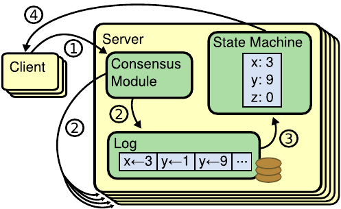
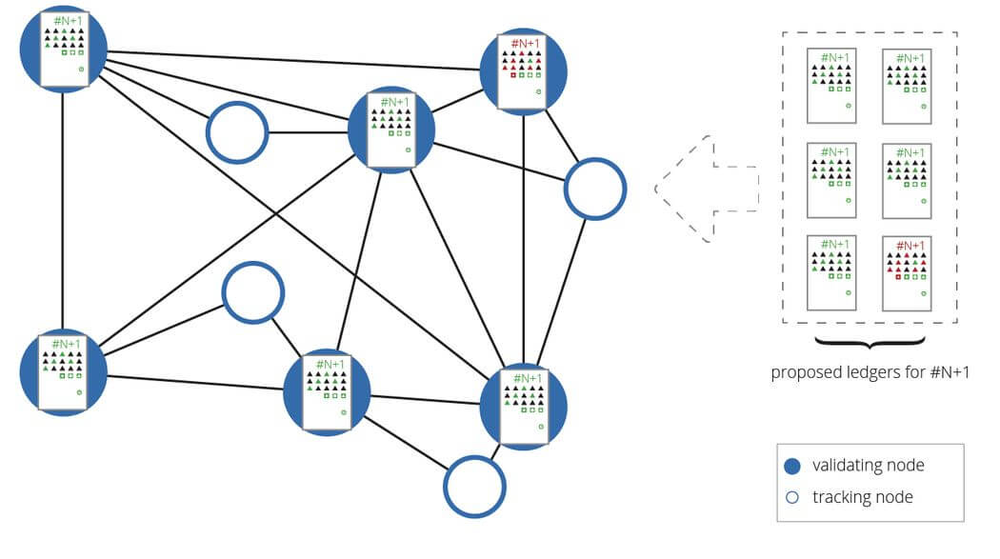

Understading Consensus
An Introduction to Consensus
Agreement amongst the different nodes in our system is a fundamental requirement. In nature, this occurs by the exchange of information and negotiation amongst those involved to reach a common understanding or agreement, before taking an irreversible action.

Byzatine Fault Tolerance
Amongst the n processes of the system, at most f of them can be faulty.
A faulty process can behave in any manner allowed by the failure model. The Byzatine failure model, has been chosen, because fail-stop models and send/receive omission models have a probability of behaving unpredictably.
As the scientific literature shows, consensus around an asynchronous system can't be established, hence we're narrowing down to synchronous systems in which the non-arrival of an expected message can be dealt with by assuming the arrival of a message with default data, and moving on to the next round of the algorithm.
Here we are considering full logical connectivity within the local cluster, where each node can communicate with another with the help of message passing.
We'll therefore be using our protocol to solve the Byzatine Agreement Problem , the consensus problem and the interactive consistency problem , interchangeably, as a generalisation.
Authentication, Scheduling and Assumptions
Authentication, discussed further in the paper, ensures that every node knows the identity of the sender process. The protocol, also uses an authentication in the form of a digital signature, which makes sure that if a node forges a message or tampers with the contents of the received message before it has been relayed, the recipient can detect the forgery or tampering - thereby reducing the damage that faulty nodes can cause.
We're also assuming that the different rounds of the consensus protocol, are dealt with in the form of sub-rounds with the message passing being synchronised with the help of a scheduler.
A simplification of the problem statement, can be yielded by assuming that the channel is reliable, therefore meaning channel instabilities are handled by our byzatine failure model.
The TrstWeb Consensus Protocol
The TRSTWeb Consensus Protocol relies on an extended form of the Federated Byzantine Agreement, currently in production, with Ripple and the Stellar Consensus Protocol. The extension to the aforementioned FBA protocol, lie in the domain of hierarchial clustering of nodes, and leader election, therefore preserving the original theoretical proofs of security.
Let's consider that our global system, consists of a loose confederation of nodes, each of which have chosen their own set of nodes they trust globally - each running the TrstWeb software as the middleware. Using a replicated state machine approach towards managing secure data, we must establish consensus first.

The problem statement, defined, would be to uniformly manage said replication, across all the nodes uniformly, such that it remains in sync. Now, all the replicas rely on the same state of the system, and agree on the same exact sequence of deterministic operations, so as to arrive at the next state.
Simplifying further, heuristically, the question comes down to if the node V can apply the update x on the slot n. System wide agreement on a system is possible when a sufficient threshold of messages have been passed through the network. We also assume that irreversible actions happen every time an action is committed by a node, meaning the node can't change it's history.
This forms the backbone of the trust mechanism, and is also reffered to as the blockchain, or the distributed leger. 
Scoping System Requirements
The consensus problem based on top of the byzatine agreement problem requires a node with an initial state to reach an agreement in the form of a single value, with all the other nodes in the system.
Formally, in the system, we'd like it to have safety in terms of both agreement and validity, as well as termination.
- Termination : All non-faulty processes eventually decide on a value
- Agreement : All processes that decide do so on the same value
- Validity : The value that has been decided must have proposed by some process
Due to the FLP impossibility result, however, we can't achieve all of the above. We'll be exploring possible tradeoffs further in the paper.